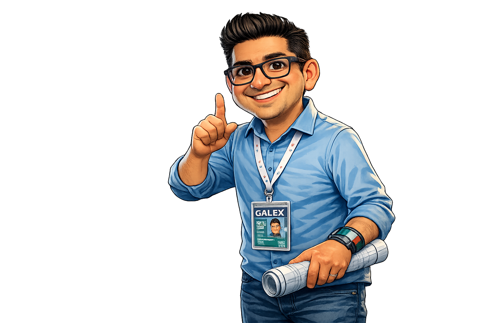

Escuela Preparatoria Oficial Núm. 216
CCT: 15EBH0306F
¿Cuál es nuestro compromiso como comunidad educativa frente a la no violencia y la inclusión?
La Escuela Preparatoria Oficial No. 216 reafirma su compromiso con la formación integral de jóvenes líderes que promuevan la no violencia, la inclusión y el respeto como pilares fundamentales de la convivencia escolar y social.
En el marco del Día Naranja, esta iniciativa busca sensibilizar, informar y fortalecer la participación estudiantil para prevenir todo tipo de violencia.
Este espacio presenta las acciones, compromisos y resultados que reflejan el trabajo colaborativo de la comunidad EPO 216.
"¿Es suficiente con que todos tengamos un lugar en el salón (Igualdad), o necesitamos que el salón esté diseñado para que todos, sin excepción, podamos participar y aprender con las mismas facilidades (Inclusión)?
¿Cómo se refleja esa diferencia en la forma en que nos tratamos día a día?"
Es el proceso de identificar y eliminar las Barreras para el Aprendizaje y la Participación (BAP). En la EPO 216, esto significa que el diseño de las actividades (como este proyectos de HTML) debe ser accesible para todos, promoviendo un ambiente donde la diversidad sea vista como una riqueza y no como un problema.
Pilares de la Inclusión Escolar:
Acceso: Que nadie se quede fuera por motivos de género, discapacidad o situación económica.
Participación: Que todos los alumnos tengan voz en los proyectos institucionales (como el Día Naranja).
Aprendizaje: Que las enseñanzas se adapten a los diferentes ritmos y estilos de cada estudiante.

Frase para el Proyecto Final:
"En la EPO 216, la inclusión es el código base de nuestra convivencia; sin ella, nuestra estructura social no carga correctamente."
¿Qué es la Práctica y Colaboración Ciudadana?
No es solo aprender teoría en el salón, es actuar. En la EPO 216, significa que los estudiantes se convierten en "Panteras Activas" que participan en la solución de problemas sociales. La ciudadanía no se espera a los 18 años; se ejerce hoy mediante el servicio, la empatía y la organización comunitaria.
El Día Naranja como Eje de Acción
El 25 de cada mes no es solo una fecha en el calendario; es el momento en que nuestras brigadas escolares se activan para recordar que la violencia contra las mujeres y niñas debe erradicarse.
Cultura de Paz
La cultura de paz es un conjunto de valores, actitudes y comportamientos que rechazan la violencia y previenen los conflictos.
En la escuela: Se manifiesta a través del diálogo, la mediación y el respeto a los acuerdos de convivencia.
En lo digital: Se traduce en Ciudadanía Digital Responsable, evitando el ciberacoso y promoviendo mensajes positivos en las plataformas que los alumnos construyen (HTML).
Educación Integral en Sexualidad y Género (EISG) en la EPO 216
La EISG no se limita al aspecto biológico; es un enfoque que enseña a las "Panteras" a construir relaciones sanas, basadas en el consentimiento y el reconocimiento de que todos tenemos los mismos derechos, independientemente de nuestra identidad.
Pilares del Programa:
1.- Equidad de Género: Reconocer que, aunque somos diferentes, merecemos las mismas oportunidades y trato. En la EPO 216, esto significa que el talento no tiene género.
2.- Respeto a la Diversidad: Valorar las diferencias como parte de la riqueza humana, eliminando cualquier forma de discriminación por orientación sexual o identidad.
3.- Prevención de la Violencia: Identificar conductas de riesgo (como el control, los celos extremos o el acoso) para detenerlas a tiempo.

Ing. Jesús Hazel Oviedo Fabián
Módulo IV: Software de Diseño.
Submódulo I: Páginas Web.
Área: Formación Laboral (TIC).
Enfoque Institucional: Identidad Panteras, Inclusión y Cultura de Paz.
"En la EPO 216, programamos con conciencia y diseñamos con equidad: cada línea de código es un compromiso con la inclusión, y cada espacio digital un santuario de paz para la identidad Pantera."